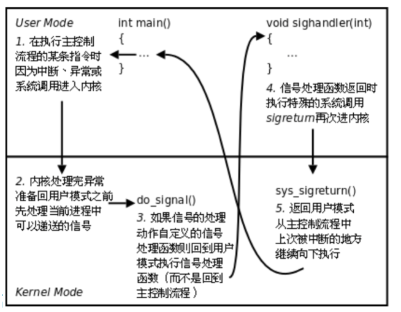
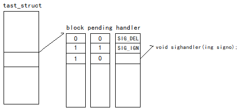

信号是一种软件中断，信号在linux中提供了异步处理的方法，将内核和进程联系起来，是操作系统内部交互的机制
kill -l指令查看所有信号
信号产生
键盘输入产生一个硬件中断（电信号）到cpu，被OS获取，解释成信号（软件），发送给目标前台进程
ctrl-c: 2号信号(SIGINT)，终止当前运行进程，只能发给前台进程，一个命令后面加个&可以放到后台运行Shell不必等待进程结束
ctrl-: 3号信号(SIGQUIT)，终止进程并且产生coredump文件
ctrl-z: 20号信号(SIGTSTP)，挂起一个进程
ctrl-d: 不是发送信号，而是表示一个特殊的二进制值，表示 EOF通过硬件异常产生信号
CPU: 0作为除数时，CPU运算单元会产生异常，产生8号信号（SIGFPE）
MMU: 访问内存越界或者非法的时候，MMU发现当前内存不合法，就会通知OS向该进程发送11号信号（SIGSEGV）调用系统函数向进程发送信号
系统调用，给某个进程发送某个信号int kill(pid_t pid, int signo);
库函数int raise(int signo);底层封装kill了
库函数void abort(void);使当前进程接收到信号SIGABRT而异常终止软件条件产生信号
管道所有读端关闭，写操作会触发13号信号（SIGPIPE）unsigned int alarm(unsigned int seconds);seconds秒后，操作系统会发送14号闹钟信号（SIGALRM）
信号递达：实际执行信号的处理动作
信号未决：从信号产生到信号递达之间的状态
信号阻塞：如果一个信号被阻塞，那它在产生时处于未决状态，不会被递达，只有解除该信号后，才被递达(信号忽略是在递达之后可选的一种处理动作)
信号处理方式
信号有三种处理方式
- 忽略某个信号，不做任何处理
- 对该信号的处理保留系统的默认值，典型的缺省动作是终止进程
- 用户定义处理函数，由信号处理
sighandler_t signal(int signum, sighandler_t handler);``typedef void (*sighandler_t)(int);
内核处理过程：

sighandler和main函数使用不同的堆栈空间，它们之间不存在调用和被调用的关系，是两个独立的控制流程
信号排队
对于每一个进程，内核会用一个pending位图来标记信号的处理状态。如果一个信号还未被目标进程处理，那么对应位置就被标记为1。内核向进程递送新的信号时，会查看进程对应的pending中，该信号对应的位置是否为1
若为1则有挂起的信号，Unix传统的做法，内核将直接丢弃这一信号，不可靠信号(1~31)。而后Linux对此做出了一些改进，内核会为每个进程维护一组队列(queue)，有挂起信号时，就将新来的信号排队(enqueue)，可靠信号(34~64)
位图用sigset_t表示，而队列就是一个双向链表，链表头结点包含在进程对应的task_struct中
1 | struct sigpending { |
阻塞信号

每个信号都有两个标志位分别表示阻塞(block)和未决(pending)还有一个函数指针表示处理动作。信号产生时,内核在进程控制块中设置该信号的未决标志，直到信号递达才清除该标志。图中第一个信号未阻塞也未产生，当它递达时执行默认处理动作。第二个信号信号产生过，但被阻塞，暂时不能递达。在没有解除阻塞之前不能忽略这个信号，第三个信号未产生，一旦产生信号将被阻塞，它的处理动作是用户自定义函数sighandler
信号集操作函数
int sigemptyset(sigset_t *set); // 初始化set所指向的信号集全0
int sigfillset(sigset_t *set); // 初始化set所指向的信号集全1
int sigaddset (sigset_t *set, int signo); // 将signo对应位图设置为1
int sigdelset(sigset_t *set, int signo); // 将signo对应位图设置为0
int sigismember（const sigset_t *set, int signo); // 判断信号集中是否包含信号signo
返回值：成功返回0，失败返回-1。sigismember成功返回0或者1int sigprocmask(int how, const sigset_t *set, sigset_t *oset);
若oset非空，则当前信号屏蔽字通过oset传出，若set是非空,则更改信号屏蔽字
how:
SIG_BLOCK: 添加到当前信号屏蔽字中的信号，相当于mask = mask|set
SIG_UNBLOCK: 从当前信号屏蔽字中解除的信号，相当于mask = mask&~set
SIG_SETMASK: 设置当前信号屏蔽字为set，相当于mask = set
返回值：成功返回0，失败返回-1
int sigpending（sigset_t* set); 读取当前进程的未决信号集，成功返回0，失败返回-1
- SIGKILL(9号)和SIGSTOP(19号)不可被阻塞、不可被忽略、不可被自定义
演示代码：
1 |
|
输出：
0000000000000000000000000000000
0000000000000000000000000000000
0000000000000000000000000000000
0100000000000000000000000000000
0100000000000000000000000000000
0100000000000000000000000000000
前三秒没有任何信号产生，3秒后raise向进程发送了2号信号，但是2号信号为阻塞状态，所以信号产生后不会被递达的，6秒后解除了对2号信号的屏蔽，此时2号信号被递达去执行默认处理动作退出
sigaction
int sigaction(int signo, const struct sigaction *act, struct sigaction *oact);
读取和修改与指定信号相关联的处理动作
若act非空，则根据act修改该信号的处理动作。若oact非空，则通过oact传出该信号原来的处理动作
1 | struct sigaction { |
使用coredump
进程异常终止时，可以选择把进程的用户空间内存数据全部保存到磁盘上，事后可以用调试器检查core文件以查清错误原因，PCB中存在此进程允许产生core文件的大小(Resource Limit)，core文件中可能包含用户密码等敏感信息，默认是不产生core文件的，可以用ulimit命令改变Shell进程的Resource Limit，允许core文件最大为1024K: $ ulimit -c 1024子进程的PCB由Shell进程复制而来，所以也具有和Shell进程相同的Resource Limit值gdb调试启动后，可以使用core-file [corefilename]查看信息